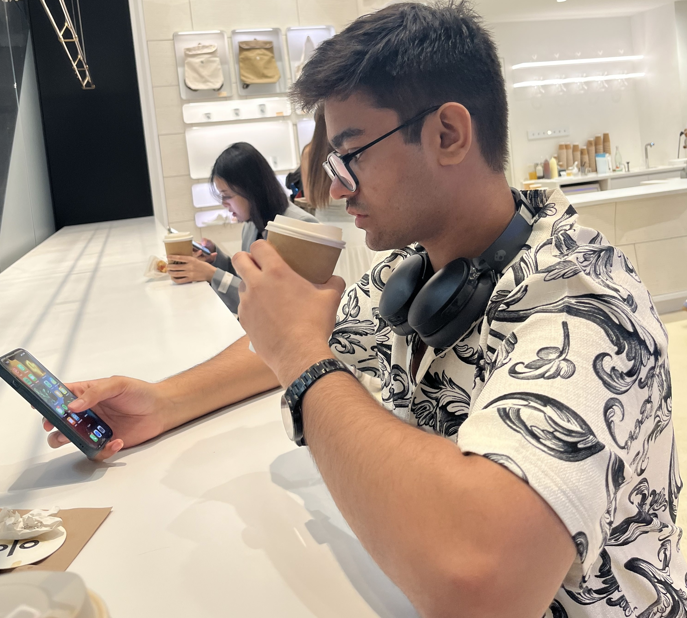

Co-op Work-Term Report
Computer Science Co-op
A creative journey through technical learning, professional growth, and real-world impact at UofG and RBC
Abstract
This work-term report presents a comprehensive overview of internship experiences at the University of Guelph and Royal Bank of Canada. The report captures academic learning outcomes, professional development, and technical achievements through an interactive online portfolio.
Each co-op term represents distinct learning objectives, challenging problem-solving scenarios, and meaningful contributions to production systems managing millions of transactions.
Webmaster Co-op
Web content management and department communications at University of Guelph History Department.
Summer 2025 RBC
Mainframe support and automation engineering for critical banking infrastructure.
Winter 2026 RBC
Advanced mainframe operations, delivery workflows, and systems automation.
Employer Overview
University of Guelph
A leading Canadian research institution focusing on education, innovation, and community engagement. The History Department values accessible digital content and effective stakeholder communication.
Royal Bank of Canada
One of North America's largest financial institutions managing complex mainframe systems that process billions in daily transactions. RBC prioritizes reliability, security, and continuous innovation in banking technology.
Learning Goals
Technical Goals
- ▸ Master web content management and accessibility standards
- ▸ Understand mainframe operations and enterprise systems
- ▸ Develop automation solutions for production workflows
- ▸ Build reliable, scalable backend infrastructure
Professional Goals
- ▸ Communicate complex technical solutions clearly
- ▸ Collaborate effectively with diverse teams
- ▸ Document work comprehensively for knowledge transfer
- ▸ Develop problem-solving and critical thinking skills
Job Responsibilities
Key Duties
- ▸ Content management and website updates
- ▸ Mainframe monitoring and operational support
- ▸ Automation scripting and workflow optimization
- ▸ Release management and deployment coordination
- ▸ Technical documentation and knowledge sharing
Technologies & Tools
- ▸ HTML, CSS, JavaScript - Web Development
- ▸ Mainframe Operations & Batch Processing
- ▸ Automation Scripting & Testing
- ▸ Git & Version Control
- ▸ CI/CD & Release Management
Reflection & Learning Outcomes
These co-op terms provided invaluable insights into professional software development. Moving from web-based content management to enterprise-scale mainframe operations expanded my understanding of system reliability, performance optimization, and the importance of thorough documentation.
The most significant learning came from balancing immediate project deadlines with long-term code quality and maintainability. Working with production systems that affect millions of customers reinforced the critical importance of rigorous testing, clear communication, and attention to detail.
Technical Growth
Deepened understanding of systems programming, automation engineering, and enterprise architecture patterns.
Professional Development
Improved communication skills, project management capabilities, and ability to work effectively in diverse team environments.
Acknowledgements
I extend my gratitude to the mentors, managers, and colleagues who contributed to these meaningful learning experiences. Special thanks to:
- ▸ University of Guelph Co-op Coordinators for program support and guidance
- ▸ History Department supervisors for mentorship in content management
- ▸ RBC Mainframe teams for technical expertise and professional development
- ▸ Colleagues and peers for collaboration and shared knowledge
Resources & References
University of Guelph
Co-operative Education program information and employer resources at Recruit Guelph
Co-op Support
Contact the School of Computer Science Co-op Coordinators at socscoop@uoguelph.ca